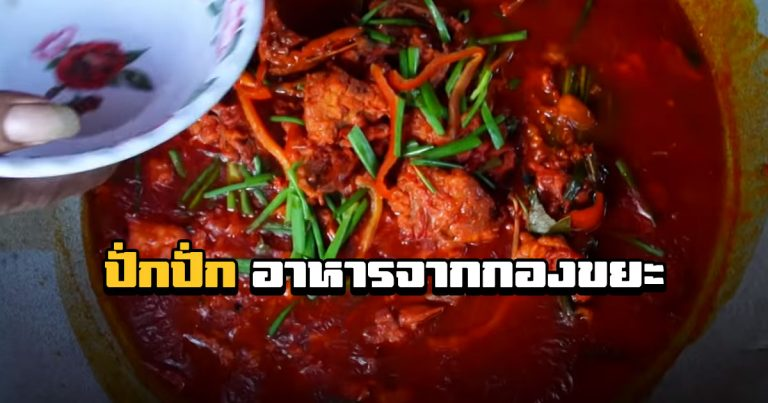

Pagpag (Filipino Style Fried Landfill Chicken)

Ingredients
- Chicken from a landfilled field
- Green onion
- Tomato sauce
Preparation
- Boil the already cooked chicken to kill all bacteria and other parasitic microorganisms
- Refry the chicken
- Prepare the tomato sauce
- Add the chicken to the sauce
- Add chopped green onion